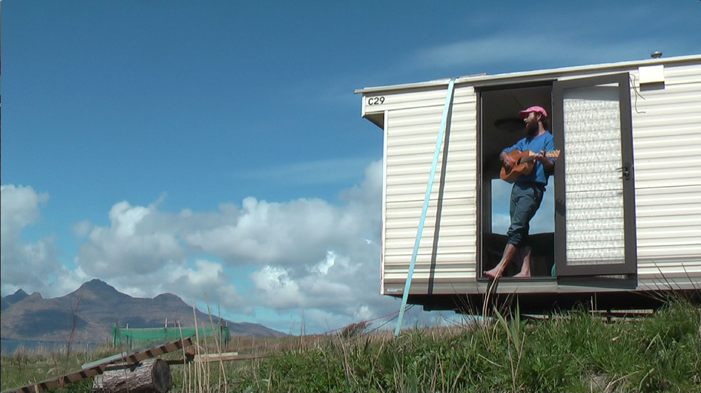

"Each of us has a unique and necessary gift to the world, and the purpose of our lives is to express this gift." — Somebody else
I'm a ?? year old man, and sometimes musician, who lives in Dorset.
I have lived in other places, and they have all left their impression upon me. Like a hermit crab, I have taken little pieces of them, and used them to adorn the shell of my spirit.
I am a Pisces, and I wonder if this explains my constant swimming and switching, always looking for something new. A little piece of me thinks whatever I'm searching for lies outside of the water. But that's fine, because I enjoy the swimming, and sometimes I'm lucky enough to catch glimpses of what's above refracting through the surface.